Café de una sola finca
Café El Portón tuesta cada mañana el grano de una sola finca del Quindío y lo sirve detrás del portón fucsia de la Calle Real, en Salento.
Abrimos de miércoles a lunes desde las 7:00 a. m.
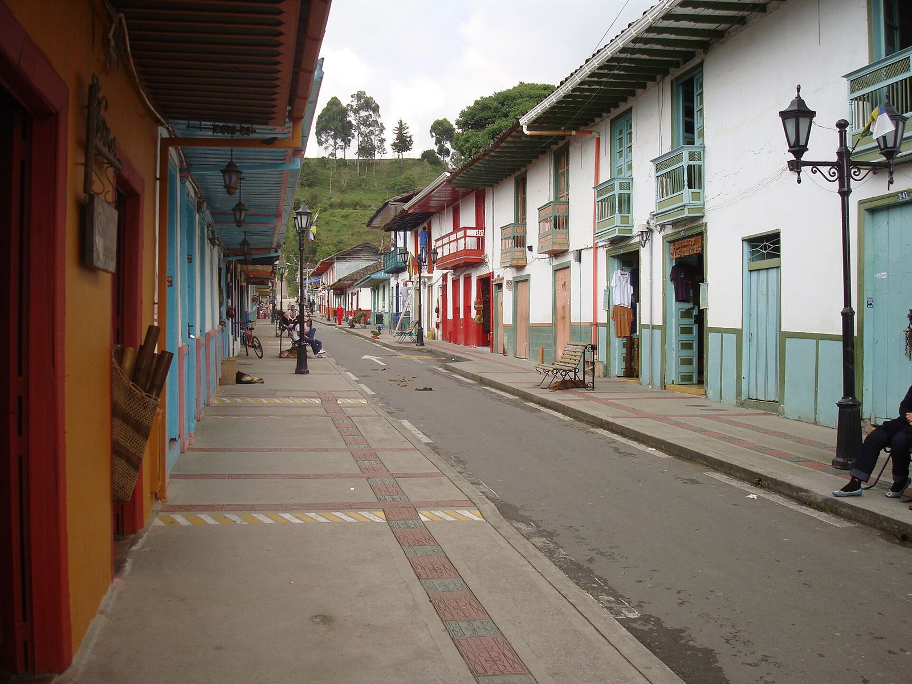
Tostamos a las seis.
A las siete abrimos el portón, y el primer tinto sale con el grano todavía tibio.
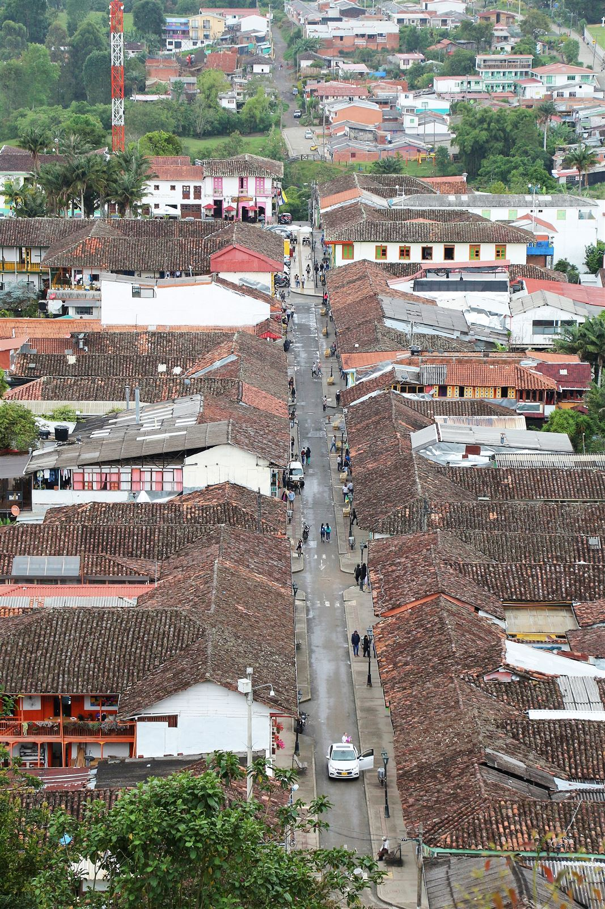
La finca del mes
Cada mes compramos la cosecha de una sola finca del Quindío y no la mezclamos con nada. En octubre es Finca La Esperanza, vereda Boquía: 1.900 metros, variedad Castillo, proceso lavado. Sabe a panela, mandarina y cacao.
Una casa de bahareque
Ocupamos una casa de 1890 hecha de guadua, barro y cal, con un patio de doce sillas. La tostadora está junto al portón, así que a las seis de la mañana la calle entera huele a café.
El martes vamos a la finca
Ese día cerramos. Subimos a catar la cosecha siguiente y a pagarla directamente a quien la cultivó.
La carta
Precios en pesos colombianos, impuestos incluidos. Todo el café de la carta es de la finca del mes.
Café
8 preparaciones-
Tinto de finca$3.500
El de siempre, pero de una sola finca. Colado en tela y servido en pocillo de peltre.
-
Espresso$5.000
Dieciocho gramos, treinta segundos. Doble sin costo adicional antes de las nueve.
-
Perico$5.500
Espresso cortado con un chorro de leche caliente, como se pide en la región.
-
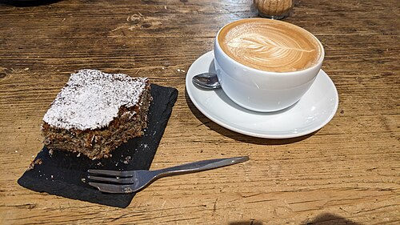
Capuchino$8.000
Leche de la vereda Palestina, espumada a mano. Se puede pedir con leche de almendras.
-
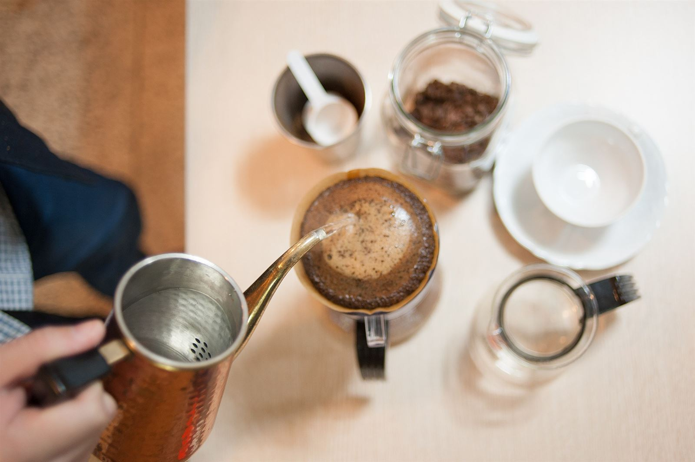
Filtrado en V60$9.500
Trescientos mililitros de taza limpia, la mejor forma de probar la finca del mes.
-
Prensa para dos$16.000
Una prensa francesa de seiscientos mililitros y dos pocillos para el patio.
-
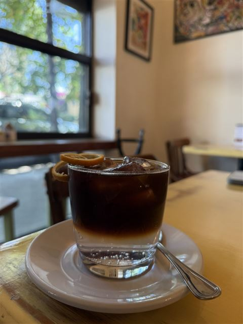
Cold brew$10.000
Doce horas en agua fría, servido con hielo y una rodaja de limón. Solo de 11:00 a. m. en adelante
-
Café con panela$5.000
Tinto endulzado con panela de trapiche de Calarcá, para quien no toma azúcar blanca.
Del horno
5 para acompañar-
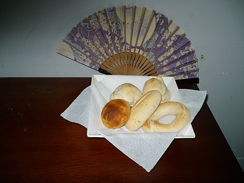
Pandebono$3.000
De almidón de yuca y queso costeño, sale del horno cada hora en punto. Sin gluten
-
Almojábana$3.500
Cuajada y harina de maíz, blanda por dentro. La pareja natural del tinto. Sin gluten
-
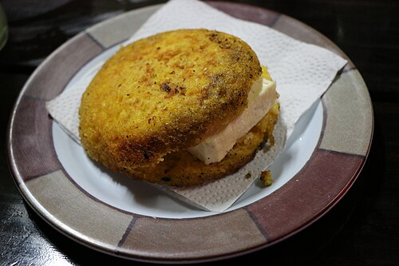
Arepa de chócolo$9.000
Maíz tierno a la plancha con quesito campesino y mantequilla.
-
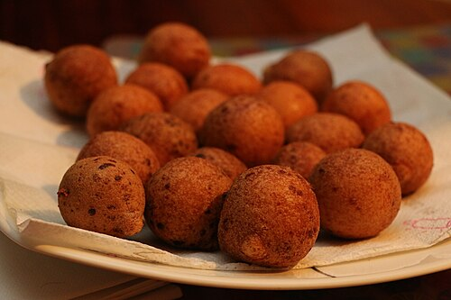
Buñuelos, tres$6.000
Redondos y dorados, fritos al momento. Los fines de semana se acaban antes del mediodía.
-
Torta de banano$7.000
Con banano maduro del patio y nueces. Una tajada gruesa, tibia si la pides. Contiene gluten y nueces
Sin café
4 bebidas-
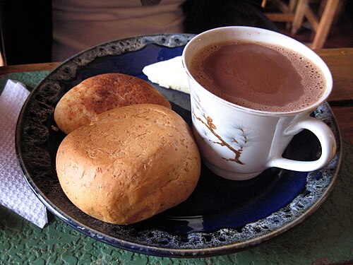
Chocolate con queso$9.500
Chocolate de mesa batido con molinillo, con queso para hundir y una almojábana.
-
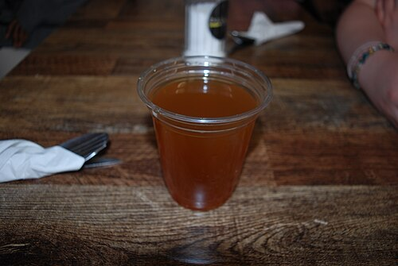
Aguapanela con limón$4.500
Caliente en la tarde fría de Salento, o con hielo cuando sale el sol.
-
Aromática del patio$4.000
Hierbabuena, limoncillo y cidrón cortados del patio esa misma mañana.
-
Jugo de lulo$7.500
En agua o en leche, con lulo de las fincas de la vía al Cocora.
Salento, de camino
Casi todos pasan por aquí antes de subir al Valle de Cocora. Abrimos a las siete para que el tinto alcance al primer Willys que sale de la plaza, y cerramos cuando baja el último.
Desde el portón se ven los balcones de la Calle Real, la iglesia al fondo y, los días claros, las palmas de cera en el filo de la montaña.
Del árbol a la taza
Cosechado a mano
En la finca solo se recoge la cereza roja, pasada tres o cuatro veces por el mismo surco.
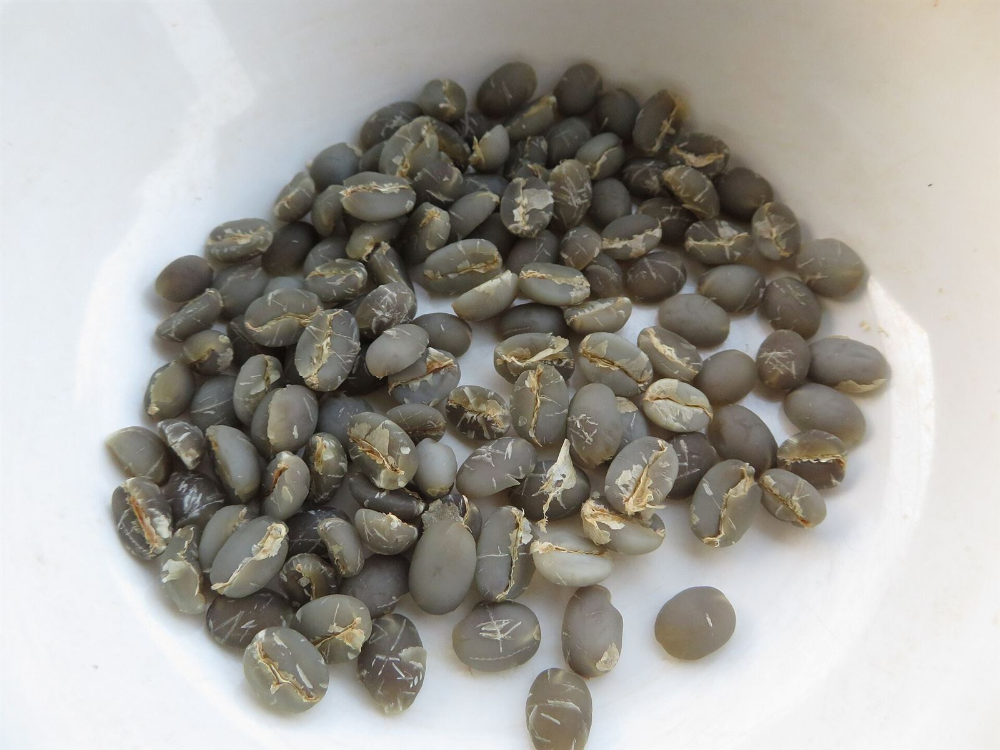
Secado y trillado
Se lava, se seca al sol en la marquesina y se trilla hasta dejar el grano verde.
Tostado a las seis
Cinco kilos por tanda en la tostadora del portón, en tueste medio, nunca oscuro.
Colado al pedirlo
Molemos cada taza en el momento. El café que sobra del día se regala a las siete en punto.
Horarios
Abrimos de miércoles a lunes.
| Lunes | 7:00 a. m. – 7:00 p. m. |
|---|---|
| Martes | Cerrado, estamos en la finca |
| Miércoles | 7:00 a. m. – 7:00 p. m. |
| Jueves | 7:00 a. m. – 7:00 p. m. |
| Viernes | 7:00 a. m. – 7:00 p. m. |
| Sábado | 7:00 a. m. – 9:00 p. m. |
| Domingo y festivos | 8:00 a. m. – 6:00 p. m. |
Hora de Colombia. La cocina despacha hasta media hora antes del cierre.
Ubicación
Calle Real #6-14, Salento, Quindío.
Dos cuadras al norte de la plaza, del lado izquierdo subiendo al mirador.
¿Solo una pregunta? Escríbenos sin reservar